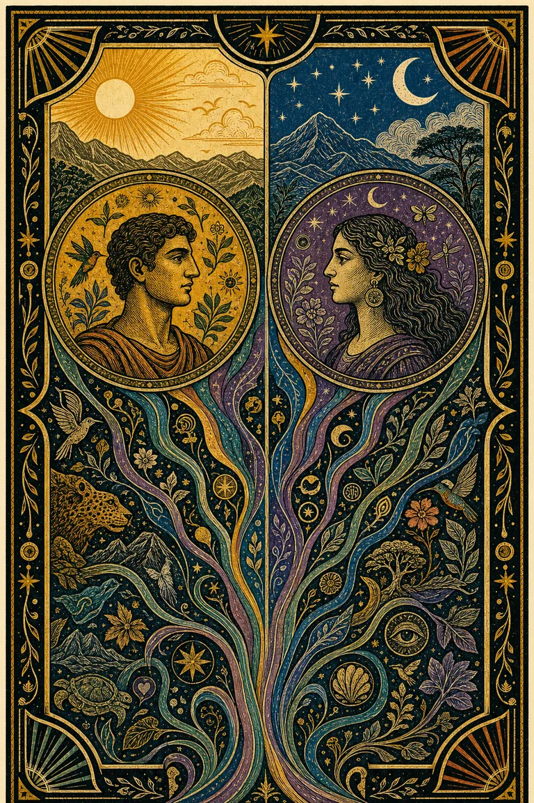
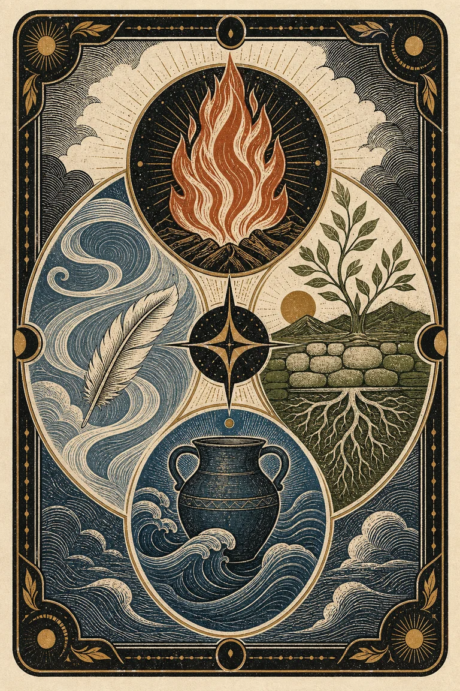
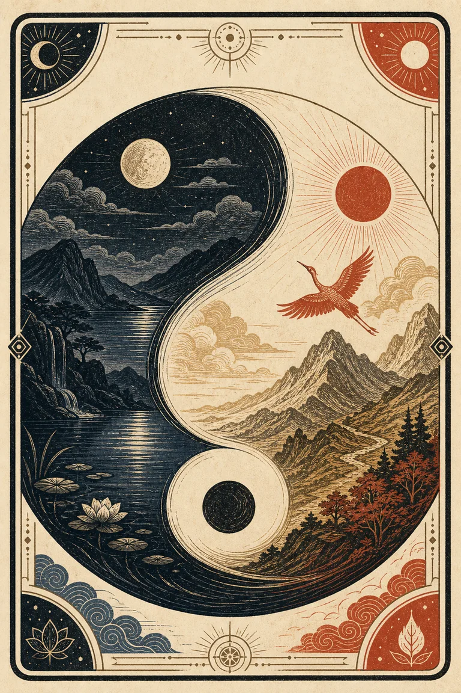
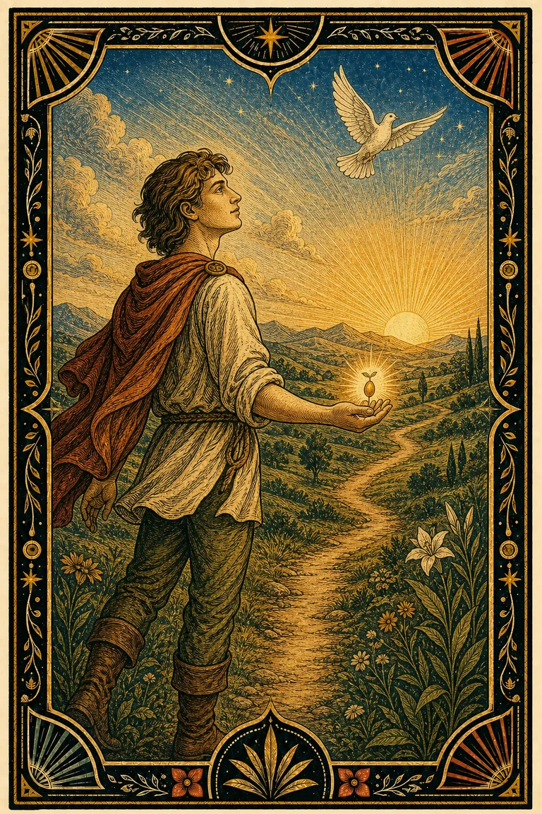
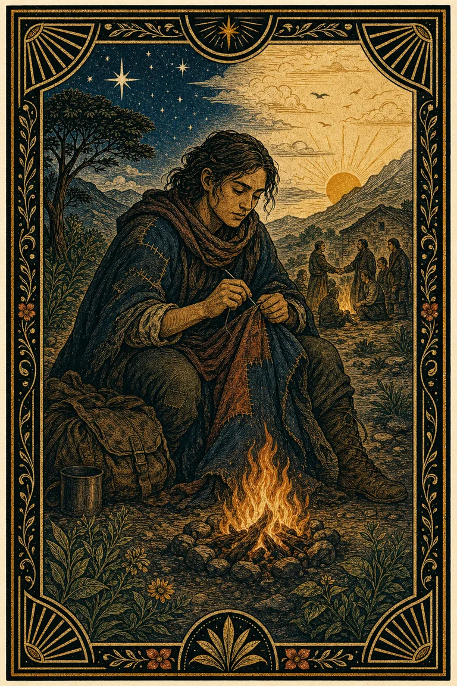
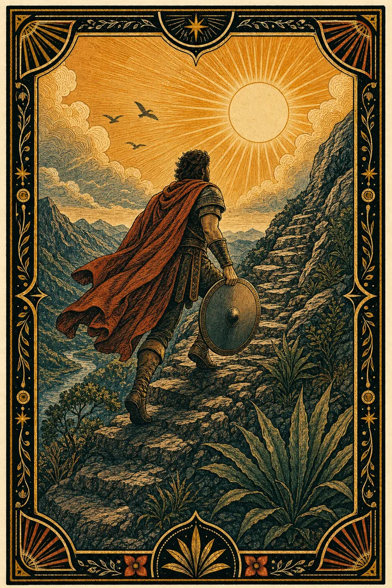

Soy no cambia
Sale de tu fecha de nacimiento. Como esa fecha no cambia nunca, tu Soy tampoco.
Antes de empezar
Numerología, zodíaco occidental, zodíaco chino y tarot interpretan tu fecha de nacimiento por separado. Nosotros mostramos cada cuenta y buscamos en qué coinciden.
Sale de tu fecha de nacimiento. Como esa fecha no cambia nunca, tu Soy tampoco.
Sale de la fecha de hoy. Por eso cambia cada semana, como el clima.
Vamos a armar tu Soy de a una tradición por vez, y después tu Estoy. Toma un par de minutos.
Tus datos · lo único que pedimos
Con la fecha basta. No pedimos hora ni lugar: sin hora exacta no se pueden calcular ascendente ni casas, y mostrarlos igual sería inventar precisión.
1 de 4
Numerología
—
—
Cada tradición que viene mira la misma fecha desde otro ángulo. Al final vemos qué se repite.
2 de 4
Zodíaco occidental
—
—
—
—
Esto es signo solar, no una carta natal. La carta completa necesita hora y lugar.
3 de 4
Zodíaco chino
—
—
—
—
El año chino cambia con el Año Nuevo lunisolar, no el 1 de enero.
4 de 4
Tarot de nacimiento
—
—
Es una correspondencia simbólica: no es una tirada ni una predicción.
Esto es tu Soy
Las cuatro tradiciones observaron tu fecha por separado. Esto es lo que se repitió.
—
—
—
—
Para llevar
—
—
Nada de esto es un diagnóstico. Son hipótesis para contrastar con lo que ya sabes de ti.
La otra mitad
—
Cambia una vez al año y define de qué se trata este ciclo.
Cambia cada siete días y sugiere cómo trabajar ese tema.
Clima de fondo: matizan el tema, no lo reemplazan.
El tema y el período los ves ahora, gratis. El detalle del ritmo va en el pase de 30 días.
Estoy · tu momento
—
—
—
Pago simulado · demo
—
Demo: no se cobra, no pedimos tarjeta y no se envían datos a Mercado Pago.
Pago simulado · no hubo ningún cobro real
Estoy · el ritmo
—
—
—— La fase se estima por fecha: aproximación etiquetada.
Soy · tu síntesis base
Reunimos numerología, zodíaco tropical, zodíaco chino y tarot para observar coincidencias y diferencias. No define tu personalidad; ofrece hipótesis concretas para contrastar con tu experiencia.

01 · Señales de convergencia
Una lectura breve antes de revisar cómo se calculó.
—
—
Un tema solo aparece si al menos dos tradiciones lo comparten. Por eso a veces hay uno y a veces dos: no completamos la lista con el siguiente candidato. Lo que no llega a ese umbral se presenta como matiz, no como otra conclusión.
—
—
—
02 · Cómo se compone
Puedes abrir cada parte para ver la cuenta, el criterio y sus límites. Junto a cada zodíaco, cómo se relaciona tu elemento con los demás.
—
—
Método utilizado: sumamos los dígitos de la fecha completa y conservamos 11, 22 y 33. Goodwin reduce mes, día y año por separado y conserva 11 y 22; por eso no presentamos esta regla como universal.
—
—
Asocia la suma reducida con un arcano mayor. Es una correspondencia simbólica; no una tirada ni una predicción.
—
—
—
—
Correspondencia del zodíaco tropical por fecha. Esto es signo solar, no una carta natal completa. Próximamente podrás desbloquear tu carta natal en Soy+.
Afinidades positivas, neutras y en tensión entre los cuatro elementos. No calcula aspectos ni define una relación completa.
Describe lenguajes generales entre elementos solares; no anuncia compatibilidad ni conflicto.
—
—
—
—
—
El animal cambia en el Año Nuevo lunisolar, no el 1 de enero.
Relaciones de impulso y regulación entre las cinco fases; tu animal y elemento natal ubican el punto de partida.
—
—
Profundiza tus patrones en Soy+ o descubre en Estoy qué pide atención durante este período.
Soy+ · experimento temporal
Primero resumimos las coincidencias de Soy en atributos ponderados. Luego observamos qué arquetipos de Carol S. Pearson reciben más apoyo. Es una hipótesis editorial para contrastar, no un test psicológico ni una identidad fija.

01 · Lectura arquetípica
El orden combina la fuerza relativa de cada atributo y cuántas tradiciones lo sostienen.
02 · Resumen intermedio
La barra muestra cuántas de las ocho fuentes aportan a cada atributo. Los atributos con más fuentes aparecen primero; si empatan, la profundidad de sus coincidencias define el orden. Ábrela para ver el detalle.
Numerología, zodíaco tropical, zodíaco chino y tarot natal aportan señales por separado. Sus coincidencias se agrupan en diez atributos ponderados.
Cada atributo puede apoyar a más de un arquetipo. Por ejemplo, Acción e iniciativa fortalece principalmente al Héroe; Transformación y cierre, al Rebelde y al Mago.
Tomamos los doce arquetipos de Carol S. Pearson para ordenar las señales que ya viste. El resultado propone una lectura para contrastar contigo: no es un test psicológico ni define quién eres.
Estoy · resumen
—

01 · De lo general a lo personal
Primero el año que compartimos, luego tus ciclos personales y finalmente la temporada solar antes de llegar a la Luna.
—
—
—
—
—
—
—
—
02 · El ritmo de estos días
La Luna no define quién eres: solo marca el borde del período actual y ayuda a convertir el clima en una semana planificable.
Son sugerencias de planificación, no instrucciones ni predicciones.
—
—
—
—
03 · Tu parte
Una decisión real vale más que seguir leyendo. Se guarda solo en este navegador.
Una lectura al inicio de cada período y una sugerencia breve cada día, entregadas por WhatsApp antes de automatizar.
Mi círculo · vínculos sin veredicto
Agrega a tu pareja, familia, amistades o equipo. Comparamos las mismas señales por separado para mostrar puntos de encuentro, diferencias de ritmo y una pregunta que valga la pena conversar.
Nada se guarda: el círculo vive solo en esta visita · máximo 6 personas contigo · comparte solo con su permiso

01 · El grupo
Tu perfil es el punto de partida. Completa el recuadro negro para sumar a alguien; al agregarlo aparecerá un nuevo recuadro para la siguiente persona.
02 · Lo que ocurre entre ustedes
Cada integrante se compara contigo. La numerología muestra focos; el signo solar, diferencias de lenguaje; el zodíaco chino, relaciones tradicionales entre animales y fases. La historia real de la relación tiene prioridad sobre las tres.
Aprende · wiki simbólica
Cinco recorridos separados. Cada uno parte por su regla general, baja a sus símbolos particulares y recién entonces muestra cómo se relacionan.
02 · Zodíaco occidental
El zodíaco tropical organiza el recorrido aparente anual del Sol respecto de las estaciones. En Soy usamos únicamente el signo solar por fecha; no fingimos una carta natal completa.
Describe el movimiento: iniciar, sostener o adaptar.
Describe qué prioriza: acción, forma, ideas o elaboración emocional.
Combina una modalidad y un elemento en una figura particular.
La modalidad es la capa más general: no dice qué haces, sino si tiendes a iniciar, sostener o adaptar el movimiento.
Marca dirección y pone algo en movimiento.
Consolida, profundiza y preserva continuidad.
Traduce, ajusta y prepara el cierre de un ciclo.
El elemento aporta un repertorio general. No es una personalidad completa ni una medida de compatibilidad.

Convierte intención en movimiento.
Aries · Leo · SagitarioBusca estabilidad y resultados concretos.
Capricornio · Tauro · VirgoOrganiza experiencia mediante conceptos y vínculo.
Libra · Acuario · GéminisProcesa matices, memoria y sensibilidad.
Cáncer · Escorpio · PiscisEl signo solar es la combinación particular. Por ejemplo, Virgo no es solo Tierra: es Tierra mutable, orientada a ajustar y precisar.
Inicia mediante acción.
Sostiene forma y estabilidad.
Adapta ideas e intercambio.
Inicia cuidado y pertenencia.
Sostiene expresión y presencia.
Ajusta forma y método.
Inicia vínculo y acuerdo.
Sostiene profundidad y cambio.
Adapta impulso y visión.
Inicia estructura y objetivo.
Sostiene ideas y perspectiva.
Adapta sensibilidad e imaginación.
Solo después de entender cada capa comparamos lenguajes. El grafo no calcula aspectos ni garantiza compatibilidad.
Toca un elemento para animar sus tres relaciones.
Reconocen prioridades y ritmo, pero pueden repetir el mismo punto ciego.
Un lenguaje aporta algo que el otro puede movilizar o sostener.
Operan con prioridades distintas, pero traducibles.
Exige más traducción; no significa conflicto anunciado.
03 · Zodíaco chino
El zodíaco anual se organiza mediante un calendario lunisolar. El Año Nuevo se vincula con una Luna nueva, pero el calendario chino también usa términos solares: llamarlo puramente “lunar” sería incompleto.
Describe una orientación receptiva y gradual o activa y exterior.
Madera, Fuego, Tierra, Metal y Agua describen movimientos, no sustancias fijas.
El animal anual aporta un repertorio simbólico dentro de un ciclo de doce.
La polaridad alterna cada año. No equivale a femenino/masculino ni clasifica a una persona como pasiva o dominante.

El movimiento se describe como interior, acumulativo y atento al contexto.
El movimiento se describe como visible, directo y orientado a la acción.
Wu Xing describe cinco transformaciones relacionadas. No corresponde uno a uno con los cuatro elementos occidentales.
Atributos principales: crecimiento, vitalidad y renovación.
Atributos principales: acción, transformación y dinamismo.
Atributos principales: estabilidad, apoyo y contención.
Atributos principales: estructura, criterio y límite.
Atributos principales: adaptación, nutrición y calma.
El animal se determina por el año lunisolar efectivo, no automáticamente por el año gregoriano. Quien nace en enero o febrero debe revisar el límite exacto.
Estrategia y oportunidad.
Constancia y método.
Acción e idealismo.
Sensibilidad y diplomacia.
Impulso y carisma.
Observación y precisión.
Movimiento y autonomía.
Cuidado y expresión.
Ingenio y adaptación.
Orden y claridad.
Lealtad y criterio.
Apertura y generosidad.
Las flechas muestran funciones de impulso y regulación. Las trinas agrupan animales por afinidad tradicional; ninguna relación basta para diagnosticar compatibilidad.
Toca una fase para animar qué relaciones entrega y cuáles recibe.
Cada fase crea condiciones para que otra pueda desarrollarse.
Regula es neutral: aporta un límite útil, no daño.
Intensifica tanto el recurso como su posible exceso.
Qué proceso necesita impulso y cuál necesita borde.
Estrategia, carisma social y capacidad de abrir caminos.
Disciplina, precisión y paciencia para construir resultados.
Acción, lealtad, idealismo y movimiento directo.
Sensibilidad, cuidado, belleza y cooperación afectiva.
01 · Numerología
Una regla puede ser reproducible sin convertirse en una verdad científica. Por eso mostramos la operación, nombramos el método y separamos el número de su lectura editorial.
Método utilizado: sumamos todos los dígitos de la fecha y conservamos 11, 22 y 33. Otras escuelas reducen día, mes y año por separado o conservan menos números maestros.
2 + 6 + 0 + 8 + 1 + 9 + 9 + 2 = 37
3 + 7 = 10 → 1 + 0 = 1La cuenta es verificable. El significado atribuido al 1 pertenece a una tradición numerológica, no a una medición psicológica.
Los números no forman una escala de mejor a peor. Cada uno propone un aprendizaje y un posible exceso.
Liderazgo; exceso de autosuficiencia.
Cooperación; exceso de complacencia.
Creatividad; exceso de dispersión.
Método; exceso de rigidez.
Exploración; exceso de evasión.
Responsabilidad; exceso de carga.
Estudio; exceso de aislamiento.
Estrategia; exceso de control.
Integración; exceso de sacrificio.
Sensibilidad intensa; riesgo de sobrecarga.
Visión práctica; riesgo de perfeccionismo.
Cuidado amplio; riesgo de salvacionismo.
Camino de vida tiene peso alto, pero no define por sí solo a la persona. Se contrasta con las demás fuentes y solo sube un tema cuando otra tradición lo sostiene.
Cada señal conserva su cálculo y su límite. Una coincidencia se formula como hipótesis; si no hay un tema común, la salida correcta es “sin convergencia clara”.
Dato → regla → significado tradicional → tema editorial → contraste04 · Fases lunares
La fase lunar observa la geometría aparente entre Sol, Tierra y Luna. En Estoy la usamos para modular cómo trabajar el tema del año personal durante varios días; nunca para reemplazarlo.
El ciclo completo dura aproximadamente 29,5 días. Esta lectura lo resume en cuatro períodos para evitar una instrucción distinta cada noche.
Sirve para formular una intención y una primera acción pequeña. No obliga a comenzar algo.
Sirve para probar, ajustar y dar soporte a lo ya elegido.
Sirve para mirar qué se volvió visible antes de decidir en caliente.
Sirve para terminar, editar o recuperar espacio. No prohíbe abrir algo necesario.
El año personal responde “qué tema estás trabajando”; la Luna responde “con qué ritmo conviene trabajarlo ahora”. Si parecen contradecirse, el tema permanece y la fase modifica la acción.
05 · Arquetipos
Jung desarrolló el concepto de arquetipo, pero no estableció una lista canónica de doce. Soy+ utiliza la síntesis de Carol S. Pearson como un lenguaje de contraste: no es un diagnóstico ni una identidad fija.
La luz nombra el recurso disponible. La sombra muestra cómo ese mismo impulso puede endurecerse, exagerarse o perder contexto. Ninguna de las dos define por completo a una persona.

También conocido como: Idealista
Confianza que abre posibilidades.
Negar el conflicto o idealizar.

También conocido como: Realista
Pragmatismo, empatía y apoyo mutuo.
Cinismo, victimización o resignación.

Pearson: Guerrero / Héroe
Disciplina para responder a un desafío.
Convertir todo en prueba o combate.
Pearson: Cuidador
Compasión que se vuelve apoyo concreto.
Postergarse, controlar o crear dependencia.
Pearson: Buscador / Explorador
Curiosidad, autonomía y búsqueda auténtica.
Escapar antes de comprometerse.
Pearson: Amante
Presencia, pasión y capacidad de elegir.
Perder criterio por agradar o poseer.
Pearson: Destructor / Revolucionario
Romper una forma agotada para renovar.
Destruir antes de comprender.
Pearson: Creador
Originalidad que convierte una idea en forma.
Perfeccionismo, dispersión o parálisis.
Pearson: Gobernante
Liderazgo, responsabilidad y estabilidad.
Rigidez, control o autoritarismo.
Pearson: Mago
Integrar señales y acompañar el cambio.
Manipular o confundir intuición con certeza.
Pearson: Sabio
Claridad mediante observación y contraste.
Analizar para no actuar o desconectarse.
Pearson: Bufón
Juego, humor y presencia en el momento.
Evadir la profundidad mediante distracción.